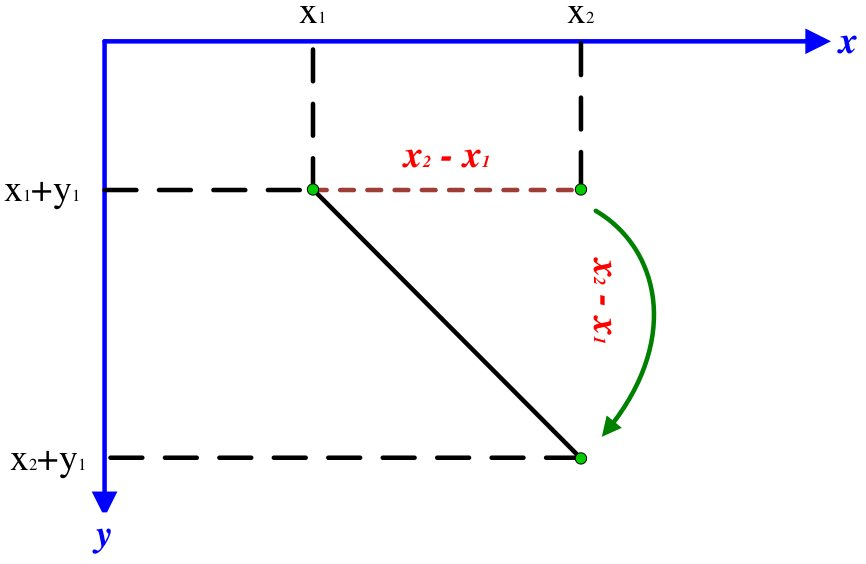
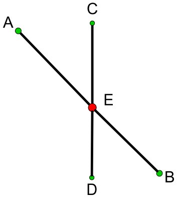
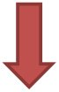

Олег Ивченко & Александр Дайняк @ CSClub
12-13 ноября 2016
for $i \ge 1$for $i \gt 1$for $i \gt 1$|  |
|

|

$x_1 \le x_3 \le x_2$
$x_3 + y_3 \le x_3 + y_1 \le x_3 + y_4$
$y_3 \le y_1 \le y_4$
|
|
Противоречие!
|
def BT():
if "$t = e$":
"$\delta_t = \varepsilon$"
if "$t = t_1 \oplus t_2$" and "$w_{t_1} \ge w_{t_2}$":
"$\delta_t = \delta_{t_1} \oslash \delta_{t_2}$"
if "$t = t_1 \oplus t_2$" and "$w_{t_1} \lt w_{t_2}$":
"$\delta_t = \delta_{t_2} \oslash \delta_{t_1}$"
|
|